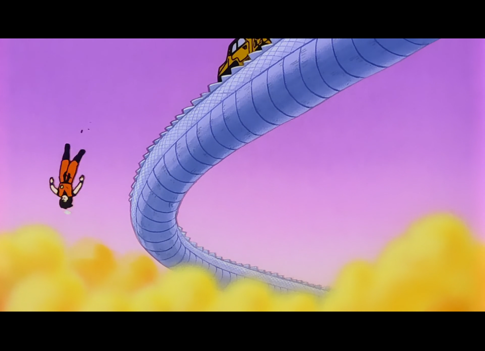
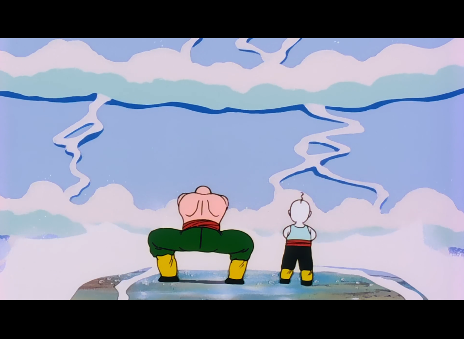

SAGA DES SAIYANS
Épisode 12 : Un chemin sans fin - 蛇の道でいねむり 悟空が落っこちる
Il ne reste plus que neuf mois avant l’arrivée des Saiyans, et nos héros poursuivent activement leur préparation. Son Gohan continue de s’endurcir dans le désert, toujours placé sous la surveillance discrète de Piccolo. De son côté, Son Goku apprend par un employé chargé de nettoyer la route du serpent qu’il n’a parcouru qu’un quart du chemin ! Pour lui permettre de gagner du temps, l’employé lui propose alors de monter à bord de son camion de nettoyage.
Pendant ce temps, sur Terre, Bulma et Krilin retrouvent Ten Shin Han et Chaozu, qu’ils emmènent avec eux afin qu’ils puissent s’entraîner à leur tour. Sur la route du serpent, Son Goku, épuisé, s’est endormi sur le camion... Soudain, une bosse secoue violemment le véhicule et le fait chuter du chemin du serpent. Il se retrouve alors dans un lieu étrange et inconnu...

Remarque
Le scénariste de l’épisode, Takao Koyama, a longtemps travaillé sur la série Saint Seiya, et l’on retrouve d’ailleurs un clin d’œil à cet univers : tout comme Shiryû, Ten Shin Han s’entraîne en tentant d’arrêter le courant d’une cascade. Les deux personnages partagent en outre le même doubleur japonais, Hirotaka Suzuoki. Par ailleurs, la dernière apparition de Ten Shin Han dans Dragon Ball GT présente de fortes similitudes avec cet épisode.

 LISTE DES ÉPISODES
LISTE DES ÉPISODES